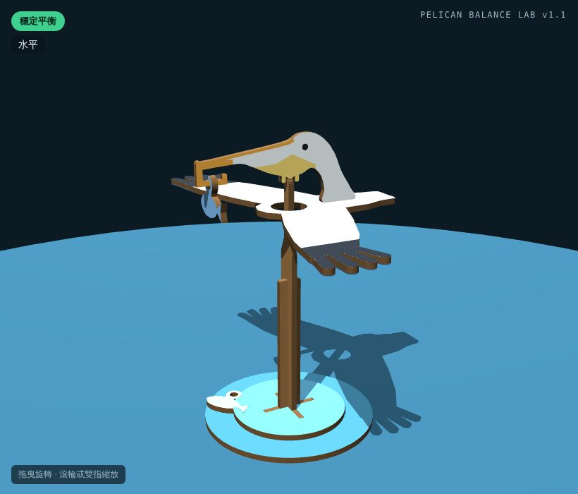
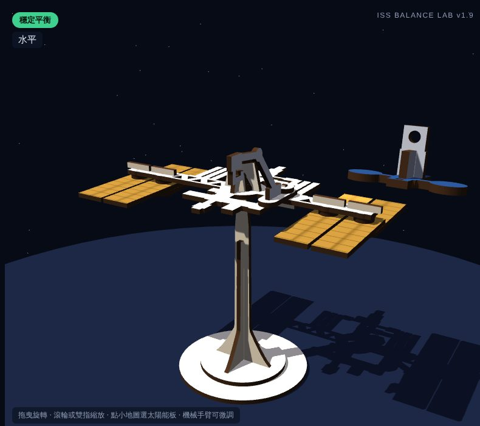

 鵜鶘平衡鳥 喉囊底的鈍尖點坐在木樁上；嘴尖掛魚，餵幾條魚就會抬頭或低頭。 支點喉囊鈍尖點（R0.6） 重心支點下方約 12 mm 調整1 條魚水平，0 條抬頭、2 條低頭各約 6° 平衡實驗室 SVG DXF A3 紙板原型
 國際太空站 觀測塔的鈍尖點頂在火箭圓頭上；轉太陽能板、移動機械手臂、讓太空船停靠，都會改變重心。 支點交叉支點（尖點對圓頭） 重心左右 12.6 mm、前後 15.2 mm 零件53 片，板面 362 × 263 mm 平衡實驗室 SVG DXF A3 紙板原型